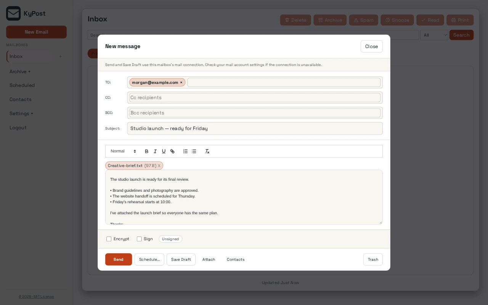

Keep your provider
KyPost sits between your existing IMAP and SMTP mailbox and your devices. You do not have to become a mail-delivery operator to use it.
KyPost / Email
Read and send mail through your own web interface, keep your existing IMAP and SMTP provider, and pair native clients to your server.
Open source (MIT) · Open betaScreenshots
Example screens from local builds with fictional data. Appearance varies by version.

Inside KyPost
KyPost sits between your existing IMAP and SMTP mailbox and your devices. You do not have to become a mail-delivery operator to use it.
Scan a QR code from Security, then Devices, in the web app; each code expires after 90 seconds. Every device gets its own credential in the platform keystore. Lose a phone, revoke the phone.
Filter rules, contacts and the classifier that sorts your inbox run on your server. By default nothing about your mail leaves it for a cloud model.
Your browser generates or imports your OpenPGP key and wraps it before upload. Enroll supported devices to decrypt mail locally. Server-protected key custody is retired; existing legacy keys must be migrated.
Turn on device encryption, multi-factor sign-in, local sorting and push delivery when you are ready, not all at once.
Native apps pair to your KyPost server rather than directly to an email provider. Release channels, signing and device requirements differ by platform; follow the linked client documentation.
How it fits together
Connect an existing IMAP/SMTP mailbox to get started; native mailbox receiving is still in qualification. The connection test checks IMAP, so verify sending and receipt separately. Your server stores mailbox credentials and mail data, and its operator manages updates and backups. Optional notification providers process delivery data.
Read the KyPost privacy policy. For data on an independently operated installation, contact its operator.
Next step
The project documentation is the place for current requirements and instructions.